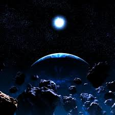
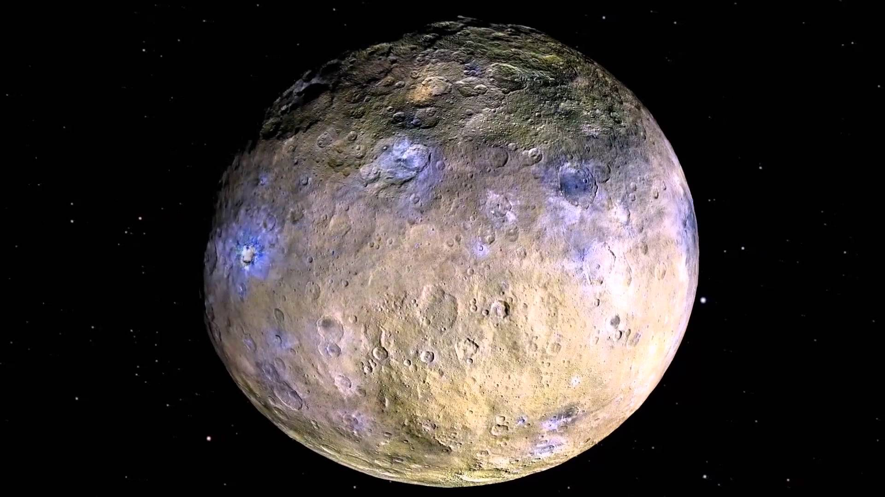

Главная

Колонизация планет Cолнечной системы и их спутников |
||||||||||||||||
|
Главный пояс астероидов Плюсы:
Минусы:
Наиболее привлекательные астероиды:
Церера Параметры:
Колонизация ЦерерыЦерера содержит больше пресной воды, чем Земля. Вода могла бы быть полезной для колонистов, для производства пригодного для дыхания кислорода и водородного топлива для ракет. Поскольку у Цереры совсем нет атмосферы, астронавтам придется возвести прозрачный купол над поверхностью карликовой планеты. По мере роста колонии, ее жители могли бы достраивать купола к уже существующему, расширяя жилую зону, пока она не накроет всю поверхность Цереры, как многогранное глазное яблоко космического насекомого. Вряд ли в скором времени это получится сделать, но ученые уже создали успешные купольные жилища на Земле, поэтому остался вопрос масштабирования технологии и надежда на то, что все пойдет хорошо в условиях космического вакуума космоса. Также можно установить орбитальные зеркала у Цереры и увеличить кол-во солнечной энергии, поступающей на ее поверхность, что позволит расплавить лед и выпарить честь его в атмосферу, что позволит ее значительно насытить. И чтобы появилась атмосфера, как и у Земли, необходимо увеличить ее массу, желательно до земной. Также можно очистить место рядом с планетой, чтобы космическим кораблям легче было летать на нее. Также можно пустить несколько комет по касательной к планете и добиться скорости вращения, совпадающую с земной. Гипотетически это приведет и к появлению магнитного поля у Цереры Плюсы и минусы колонизации Цереры
НО!
ВыводыКолонизация Цереры – это один из наиболее осуществимых проектов, наряду с Луной, Марсом и Венерой. Осуществление этого плана даст огромный толчок для освоения других космических тел. Также у человечества появится новый источник ресурсов и энергии. |

Астероиды 
Церера 
|
|||||||||||||||

© Сайт проекта колонизации планет Солнечной системы 2020 -
|
||||||||||||||||